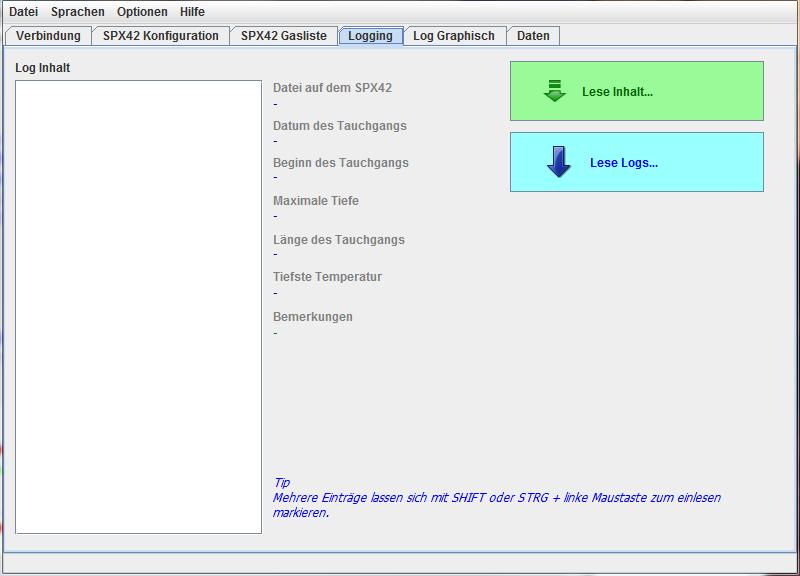

Übersicht
Der Tab "Logging" ist nur im "online" Modus zugänglich. Er dient der Übersicht
über Logdaten auf dem verbundenen SPX42 und der Übertragung der Logdaten
auf den PC.

Logging Übersicht
zum Inhalt
Inhaltsverzeichnis des SPX42
Um eine Übersicht zu bekommen, welche Logdaten auf dem SPX42 vorhanden sind,
muß man den Button "Lese Inhalt" anklicken.
Es erscheint eine animierte "Bitte warten" Anzeige in enem gesonderten Fenster,
während das Inhaltsverzeichis vom SPX42 geladen wird.
Bereits in der internen Datenbank vorhandene Logdaten werden mit einem Stern "*"
hinter dem Verzeichniseintrag gekennzeichnet.
Markierter Eintrag (schon in der Datenbank vorhanden)
Rechts neben dem Verzeichnis der Logeinträge befindet sich ein Bereich für
Details. Dort werden Details zum jeweils markierten Logeintrag angezeigt. Bei
bereits in der Datenbank gespeicherten Einträgen sind mehr Details verfügbar.
Markierter Eintrag (schon in der Datenbank vorhanden)
Markierter Eintrag (NICHT in der Datenbank vorhanden)
Bei mehreren markierten Einträgen werden die Details des obersten markieren
Eintrages angezeigt.
Mehrere Einträge lassen sich dürch STRG + Linke Maustaste einzeln markieren,
zusammenhängende Bereiche (von - bis ) mit der Umschalttaste und der linken
Maustaste.
zum Inhalt
Übertragen der Logdaten in die Datenbank
Um die Logdaten in die interne Datenbank zu sichern werden die in Frage kommenden
Einträge des Verzeichnisses ("Log Inhalt" ) markiert. Anschließend werden die
Daten durch Klick auf den Button "Lese Logs..." in die interne Datenbank
übertragen.
Während dieser Übertragung wird wiederum ein animiertes "Bitte Warten" Fenster
angezeigt.
Nachdem der Vorgang abgeschlossen ist, wird die Ansicht des Verzeichnisses
aktualisiert und die übertragenen Logdaten auch entsprechend markiert angezeigt.
zum Inhalt